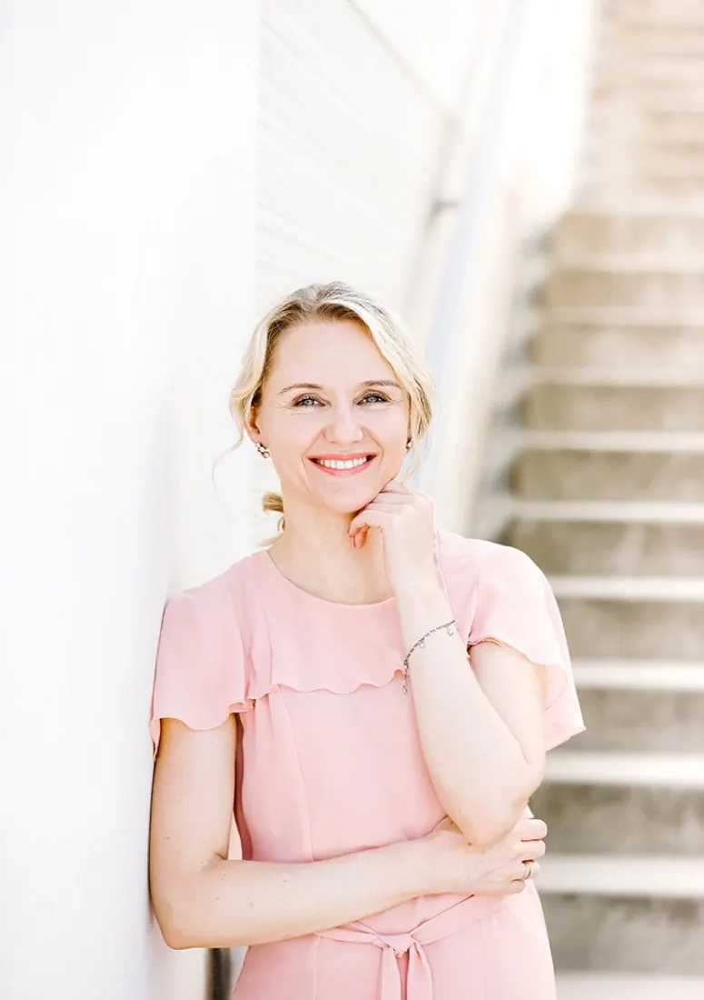

Ich bin Viktoria.
Psychoemotionale Begleitung für Kinder, Jugendliche und Erwachsene.
Von eigenen Erfahrungen zu meiner heutigen Arbeit.
Ich bin in Kirgisien aufgewachsen und war schon als Kind ein sehr sensibles und feinfühliges Mädchen. In meiner Familie war es nicht immer einfach, und oft wurde ich als „zu sensibel“ abgestempelt.
Schon als Kind musste ich schwierige Situationen meistern. Ich litt unter einer schweren Form von Neurodermitis und wurde von meinen Eltern zu zahlreichen Ärzten gebracht. Später kamen weitere gesundheitliche Herausforderungen dazu.
Mit 11 Jahren kam ich nach Deutschland. Ein neues Land, eine neue Sprache und viele neue Herausforderungen.
Mit 16 Jahren erkrankte ich an Krebs. Die Zeit danach war lang und schwer. Ich brauchte lange, um wieder ins Leben zurückzufinden und wieder festen Boden unter den Füßen zu bekommen.
Denn ich wusste aus eigener Erfahrung, wie sich Angst, Hilflosigkeit und das Gefühl anfühlen, nicht weiterzuwissen. Das, was ich selbst erlebt hatte, sollte möglichst kein anderer Mensch erleben müssen.
Deshalb entschied ich mich für ein Studium der Sozialen Arbeit und Sozialpädagogik. Ich wollte Menschen professionell begleiten und sie dabei unterstützen, schwierige Lebenssituationen zu bewältigen.
Anschließend arbeitete ich viele Jahre im sozialen Dienst des Jugendamtes und später in einer Schwangerenberatungsstelle.
Als meine Tochter mit sieben Jahren schwer an Krebs erkrankte.
Für unsere Familie begann eine besonders belastende Zeit. Wir durchlebten eine schwere Therapie, große Ängste und eine enorme emotionale Belastung. Zum Glück wurde meine Tochter wieder gesund.
Doch nachdem diese schwere Zeit vorbei war, fiel ich selbst in ein tiefes Loch. Ich entwickelte Depressionen und Panikattacken und wusste nicht mehr weiter.
Ich suchte nach Lösungen und nahm Hilfe bei Ärzten und Psychotherapeuten in Anspruch. Doch für mich fand sich dort nicht die Lösung, nach der ich suchte. Dann stieß ich durch Zufall auf Methoden, die meinen eigenen Gefühlszustand sehr schnell wieder ins Gleichgewicht brachten.
Ich wollte verstehen, wie das möglich ist. Deshalb ließ ich mich in diesen Methoden ausbilden und begann, mich immer weiter fortzubilden.
Aus Erfahrung wurde Expertise.
Zunächst arbeitete ich vor allem mit Kindern. Die schnellen und deutlichen Veränderungen führten dazu, dass Eltern mich immer häufiger fragten: „Funktioniert das auch bei Erwachsenen?“ Also begann ich, auch Erwachsene zu begleiten.
Parallel dazu lernte ich immer weiter. Ich absolvierte zahlreiche Aus- und Weiterbildungen, lernte neue Techniken kennen, probierte sie aus, kombinierte unterschiedliche Ansätze und beobachtete genau, was Menschen wirklich weiterbringt. So entwickelte sich Schritt für Schritt meine eigene Arbeitsweise.
Dabei wurde mir immer deutlicher, wie wichtig es ist, nicht nur den einzelnen Menschen zu betrachten, sondern auch sein Familiensystem. Denn wir beeinflussen uns gegenseitig: Manchmal zeigt sich ein Problem bei einer Person, während der entscheidende Zusammenhang an einer ganz anderen Stelle im Familiensystem liegt.
Wo liegt der entscheidende Punkt? Und wie kommen wir schnellstmöglich zum Ziel?
Ich betrachte diese Landkarte aus verschiedenen Perspektiven.
Aus dem, was sich als besonders wirksam erwiesen hat, entstand meine eigene Technik.
Über die Jahre habe ich zahlreiche Methoden kennengelernt, angewendet, weiterentwickelt und miteinander verbunden. Dabei geht es nicht darum, Probleme immer wieder ausführlich zu analysieren – im Mittelpunkt steht das emotionale Erleben. Denn wenn sich das emotionale Erleben verändert, verändert sich auch das Denken und Handeln.
Immer wieder werde ich gefragt:
„Viktoria, wie schaffst du es, so schnell Ergebnisse zu erzielen?“
Meine Antwort: Es ist nicht eine einzelne Methode.
Viele Jahre Ausbildung
Studium der Sozialen Arbeit und zahlreiche Ausbildungen in wirksamen Methoden.
Weiterbildung
Neue Techniken kennenlernen, ausprobieren und miteinander verbinden.
Praktische Erfahrung
Seit 2018 in eigener Praxis – mit Kindern und Erwachsenen, vor Ort und online.
Der Mensch als Ganzes
Genau dort ansetzen, wo die Veränderung entstehen kann.

Wissen weitergeben, damit mehr Menschen schneller Hilfe erfahren.
Zunächst entwickelte ich Kurse für Eltern, damit sie ihre Kinder besser verstehen und emotional unterstützen können. Heute bilde ich auch Fachleute aus, die bereits mit Menschen arbeiten und meine psychoemotionale Arbeitsweise kennenlernen und in ihre eigene Arbeit integrieren möchten.
Denn mein Ziel ist heute dasselbe wie damals als Kind:
Meine Begleitung ist auf Deutsch und Russisch möglich.
Was ich selbst erlebt habe, hat meinen Weg geprägt.
Heute verbinde ich meine persönlichen Erfahrungen, meine langjährige Arbeit mit Menschen, meine zahlreichen Aus- und Weiterbildungen und meine eigene entwickelte Arbeitsweise. Was ich selbst so lange gesucht habe, möchte ich heute anderen Menschen zugänglich machen.